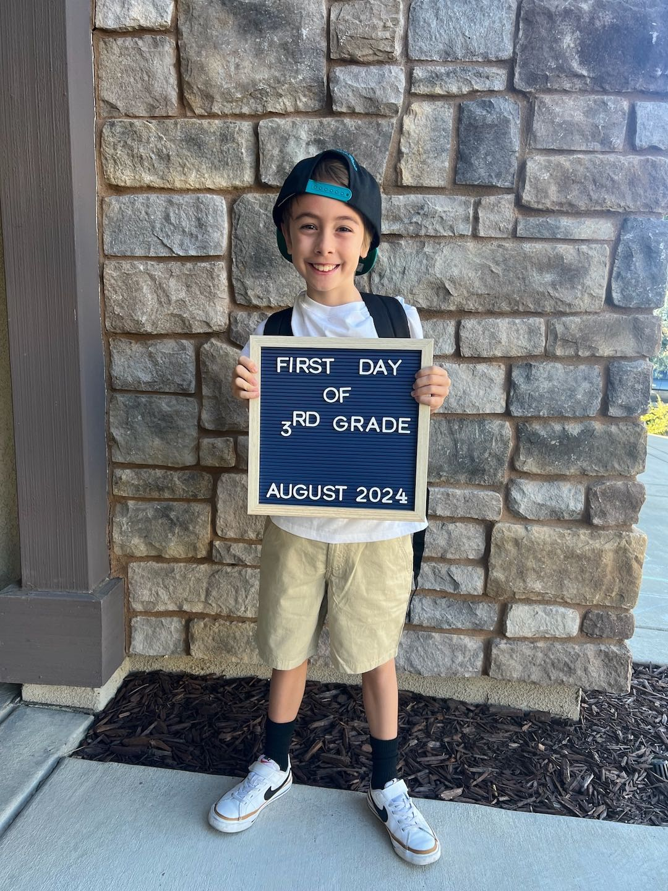
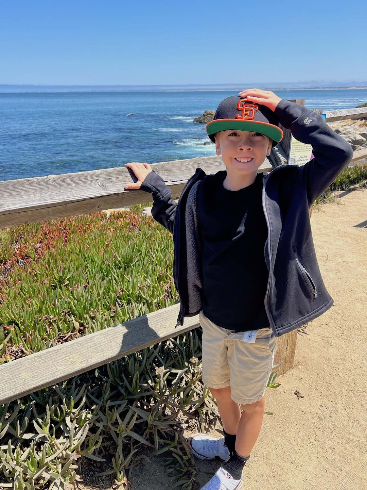
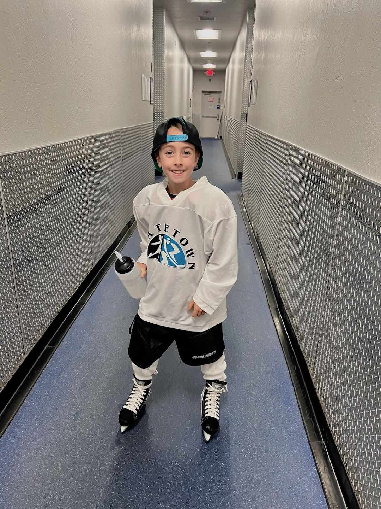
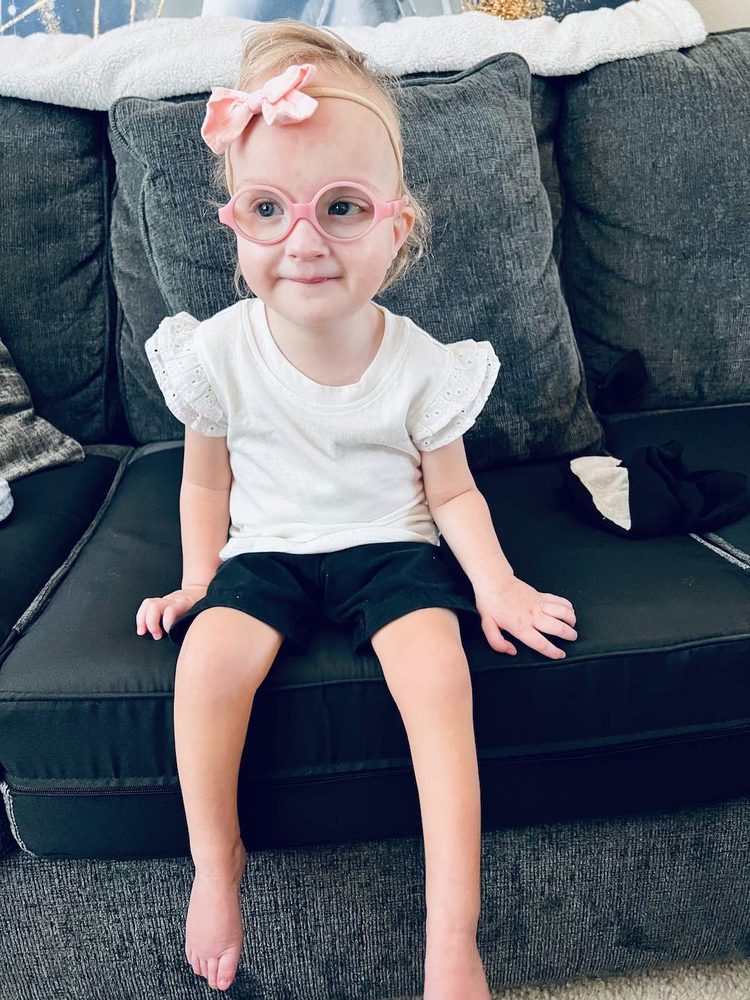
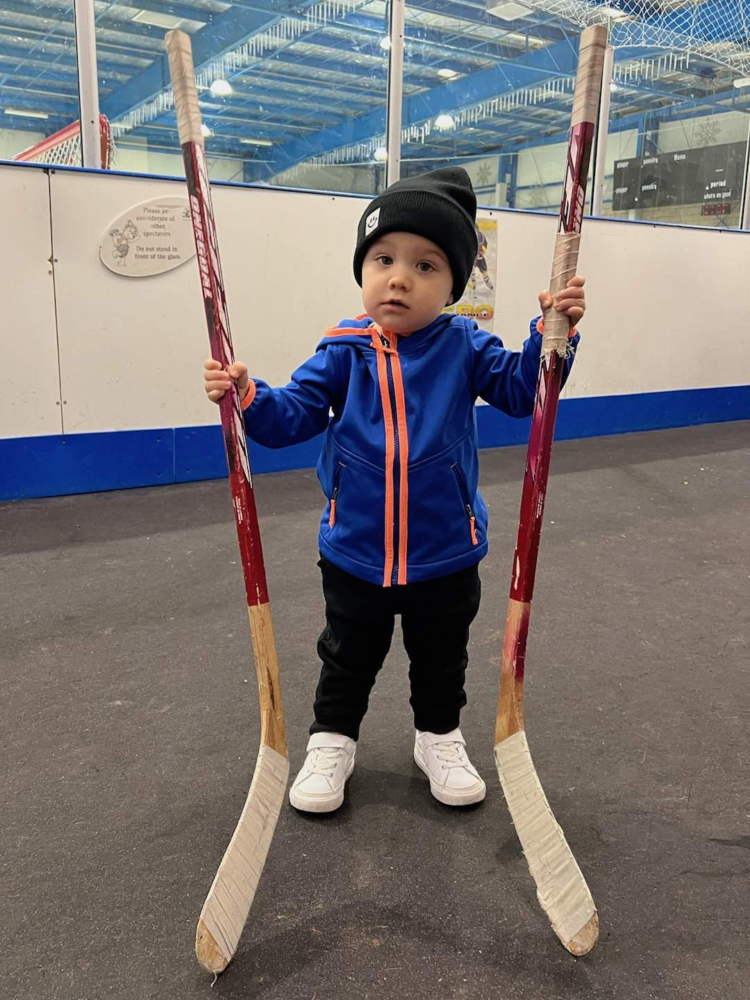

Year In Review
2025 was another year of memorable moments that included...This year we purchased our first new vehicle in more than 20 years! After much deliberation and negotiation a new platinum white pearl Honda Odyssey minivan has assumed the primary parking space in the garage. We couldn't be happier with the purchase, as all the new safety features and tech enhancements have made family travel all the more comfortable and enjoyable. Aaron now has a full 3rd row all to himself and his siblings have their car seats in the adjustable middle row.
Over the July 4th holiday, summer vacation took us back to San Diego for another stay at The Los Pinos Del Mar. Our hosts arranged for terrific fireworks viewing near the beachside fairgrounds and prepared us many wonderful meals. During the stay, we ventured to the Birch Aquarium and observed little blue penguins and magnificent seahorses. We also spent a day exploring La Jolla's coves and beaches that were full of sea lions. On the drive down we stopped at the Discovery Cube of Los Angeles which had a special exhibit about ice hockey and on the way back we toured the Kern County Museum in Bakersfield to learn about the region's rich history.
Just prior to Thanksgiving, we enjoyed an extended weekend getaway to South Lake Tahoe for Aaron's first hockey tournament. The weather was cold, but little snow was to be found. We stayed in a quaint hotel with the rest of the Capital Thunder team near the state line and roasted marshmallows at night and met a local bear and family of raccoons. We got to experience the excitement of youth hockey on the big stage as Aaron's team won the silver medal at the Tahoe Blue Event Center, home to the professional minor league Knight Monsters. Joseph really enjoyed the trip and was quite upset to have to leave the hotel suite behind.
Kendra continues her service to the elementary school, responsible for organizing the annual fundraising and family activities. She also has been grateful for the opportunity to stay home with Joseph during his transition from obedient 1 year old to outspoken, opinionated 2 year old. She has also embraced her new role as official hockey mom, which requires being equipment manager and frequent shuttles to and from the ice rink at varying days and times. There are no bounds to the efforts she makes to keep her entire family thriving.
Greg is no longer employed in the horse racing industry after 25+ years of dedicated service. He is now working on starting a new business in the predictive sports data field with an old colleague and looking for opportunities to catch on at the local casino. He enjoys keeping things organized around the house and re-watching old TV series via various streaming platforms and over the air networks. One of his biggest thrills of the year is getting to host quarterly pinochle tournaments and associated dinner parties with old friends.


Aaron
Aaron turned 9 on August 21st and is now in the 4th grade at Sunset Ranch Elementary with his first male teacher, a fellow hockey player, Mr. Haviland. At the recent parent teacher conference, we were told that he is a delight to have in class and quite helpful to all his fellow students. Recently he has been starting to learn about fractions and decimals and has been assigned various projects where he had to prepare slideshows, give presentations and even host a podcast. A memorable field trip to the Bernhard Museum, where students get to experience life in the late 1800s, was a definite highlight of the last school year.Continuing on with his extreme passion for ice hockey, Aaron tried out for and joined the local 10 & Under travel team called the Capital Thunder. The quality of training, level of competition and membership costs have all been elevated with the switch to the new program but it has all been extremely worthwhile. The team has official jerseys and apparel, adorned with his chosen #72, and they play both home and road games, some of which can often be up to 2 hours away, each weekend during the season. Practices are 2-3 days a week and he has made quite a few new terrific friends on the team. He continues to amaze us with determination to further his skills and so far this season has scored his first goal and been named MVP in the same game.
Aaron attended another Sharks hockey game in San Jose and 49ers football game in Santa Clara, yearly traditions with his father. Also this year Aaron started a membership to the CrunchLabs program started by former NASA engineer Mark Rober. Each month a new "STEM" project shows up at the door. It is so exciting to see Aaron embracing science and engineering as well as sports and leisure. He continues a love/hate relationship with his little brother, going from being an excellent mentor and teacher to bullying and being annoyed by his pint-sized shadow. He is a great friend to all and is very considerate and compassionate with all his peers.
- 
- 

- 


Kelsie
Kelsie turned 5 years old on December 28th, surviving another year with Wolf-Hirschhorn syndrome. She is quite the celebrity at Sunset Ranch Elementary and her preschool teachers and therapists delight having her in class. Her favorite activities at school are circle time and interacting with peers during free play. Kelsie apparently can be opinionated at school and is very much involved in gossiping with her amazing teacher Mrs. Tuggle. We are so pleased with how much she has blossomed and enjoys her school setting.On the medical front, earlier in the year Kelsie had successful bilateral hip surgery to correct the dysplasia that had been an issue since birth. After being told she would be in a full cast for 6 weeks of recovery, the surgeons surprised us by saying the procedure went so well she needed no cast and was good to go. Since then, she has started practicing using her gait trainer to walk around the house and her brothers love taking her for rides or using her as a goalie for indoor hockey. She is still working on the strength and coordination required for standing independently, but she is able to sit unassisted for long periods of time.
Kelsie also took up the piano this year, often playing for long stretches of time seated downstairs at the mini bench or upstairs with the electronic keyboard. She is always delighted by music and sounds and it's been encouraging to see her start participating more at making her own noise. Nothing gets a bigger rise out of her than the shuffling of cards, indicating that she is a true Robinson!

- 


Joseph
Joseph turned 2 on July 31st and has made it known that he has his own agenda and place in the household. He has displayed an ever-growing vocabulary. He enjoys working on his "projects" which includes searching various topics on the computer. He always has a "good idea" when it comes to what types of things he would like to learn about next.On vacation, Joseph kept his distance from the waves at the ocean but warmed up to the beach activities and by the end of it all was willing to let the water touch his feet. He embraced swimming in the pool and turned himself into quite the little fish by the end of summer. Perhaps there's a chance he will be a swimmer like his mother after all.
Joseph enjoyed his weekly music class and has a knack for entertaining. He performs original song and dance routines and knows how to express the entire range of his emotions. He has a terrific imagination for play, believing he was a dragon for the better part of a month leading up to Halloween. He loves the outdoors, especially parks and campgrounds and likes to explore his surroundings.
In the new year, Joseph hopes to be free from his treasured pacifiers and will also strive to reduce the diaper bill by using the bathroom on his own. He is growing up very quickly!


- 
Best wishes for a cheerful new year,
Greg, Kendra, Aaron, Kelsie & Joseph
Greg, Kendra, Aaron, Kelsie & Joseph